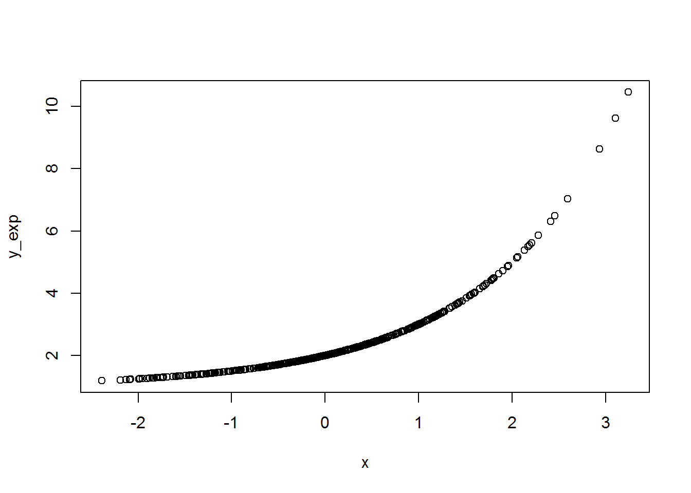

2.2 Operaciones basicas con vectores
Creemos un vector sencillo con 500 valores al azar que vamos a llamar x, para luego crear dos vectores con la exponencial y el cuadrado de x.
# Basic computation with numerical vectors
x <- rnorm(500) # extrae 500 valores al azar de la distribución normal
y_exp <- 2^x + 1 # exponencial
y_cua <- x^2 + 1 # cuadratica
# grafiquemos
plot(x, y_exp) #graficar con y_exp

Figura 2.1: figura de una curva exponencial.
mean(x) # la media## [1] 0.04623658sd(x) # la desviación## [1] 0.9768579